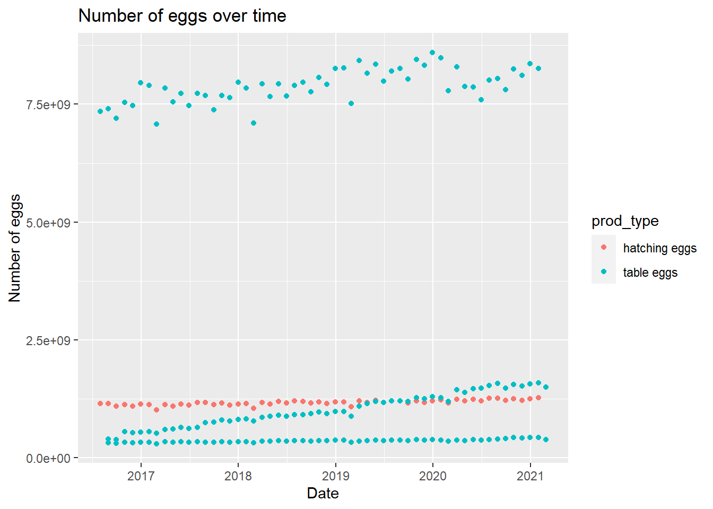
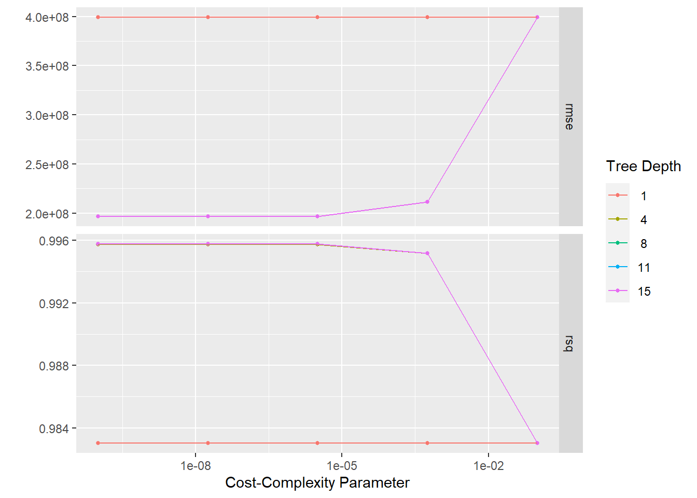
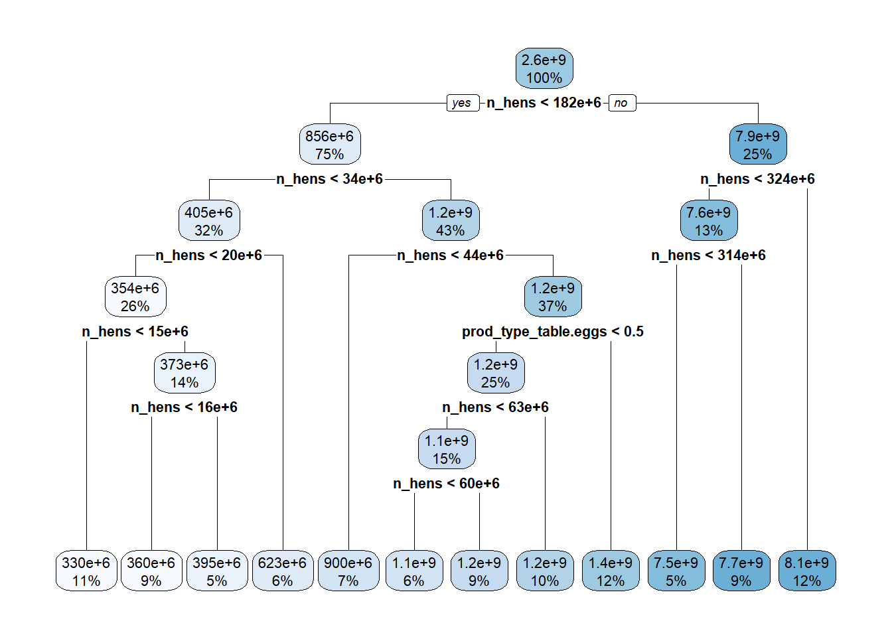
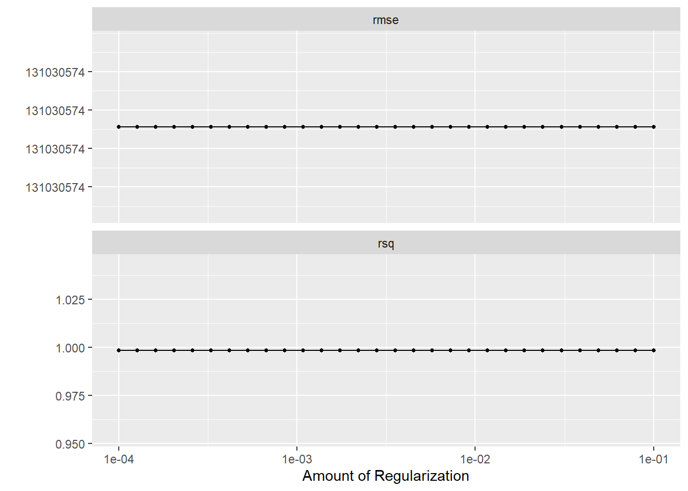
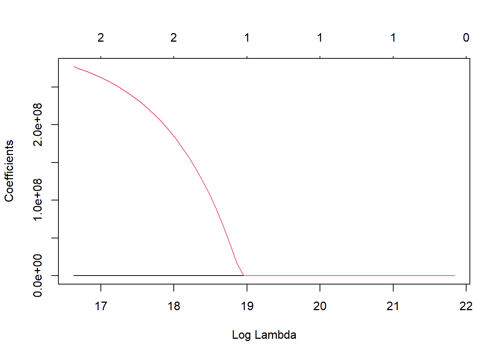
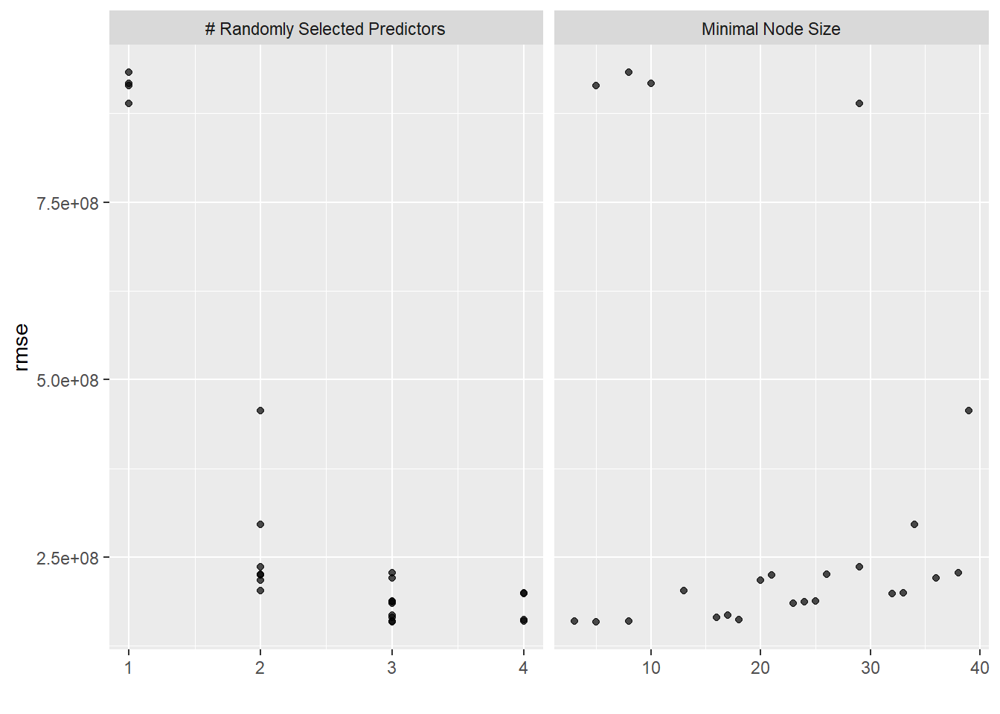
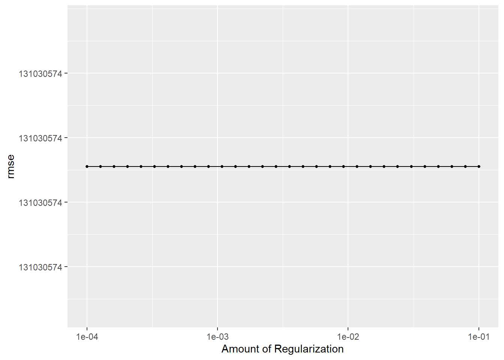

library(tidyverse)
library(ggplot2)
library(tidymodels)
library(ranger)
library(glmnet)
library(rpart.plot)
library(vip)Tidy Tuesday Exercise 2
Here is my contribution for this week’s Tidy Tuesday analysis. The data this week comes from The Humane League’s US Egg Production dataset by Samara Mendez. Dataset and code is available for this project on OSF at US Egg Production Data Set. This dataset tracks the supply of cage-free eggs in the United States from December 2007 to February 2021. Here’s the link to the Tidy Tuesday repository: https://github.com/rfordatascience/tidytuesday/blob/master/data/2023/2023-04-11/readme.md
Let’s load the packages I’ll need
Load in the data
#loading in the data per the repository instructions
eggproduction <- readr::read_csv('https://raw.githubusercontent.com/rfordatascience/tidytuesday/master/data/2023/2023-04-11/egg-production.csv')Rows: 220 Columns: 6
── Column specification ────────────────────────────────────────────────────────
Delimiter: ","
chr (3): prod_type, prod_process, source
dbl (2): n_hens, n_eggs
date (1): observed_month
ℹ Use `spec()` to retrieve the full column specification for this data.
ℹ Specify the column types or set `show_col_types = FALSE` to quiet this message.cagefreepercentages <- readr::read_csv('https://raw.githubusercontent.com/rfordatascience/tidytuesday/master/data/2023/2023-04-11/cage-free-percentages.csv')Rows: 96 Columns: 4
── Column specification ────────────────────────────────────────────────────────
Delimiter: ","
chr (1): source
dbl (2): percent_hens, percent_eggs
date (1): observed_month
ℹ Use `spec()` to retrieve the full column specification for this data.
ℹ Specify the column types or set `show_col_types = FALSE` to quiet this message.#take a look at the structure of the data
glimpse(cagefreepercentages)Rows: 96
Columns: 4
$ observed_month <date> 2007-12-31, 2008-12-31, 2009-12-31, 2010-12-31, 2011-1…
$ percent_hens <dbl> 3.20000, 3.50000, 3.60000, 4.40000, 5.40000, 6.00000, 5…
$ percent_eggs <dbl> NA, NA, NA, NA, NA, NA, NA, NA, NA, NA, 9.634938, NA, 9…
$ source <chr> "Egg-Markets-Overview-2019-10-19.pdf", "Egg-Markets-Ove…glimpse(eggproduction)Rows: 220
Columns: 6
$ observed_month <date> 2016-07-31, 2016-08-31, 2016-09-30, 2016-10-31, 2016-1…
$ prod_type <chr> "hatching eggs", "hatching eggs", "hatching eggs", "hat…
$ prod_process <chr> "all", "all", "all", "all", "all", "all", "all", "all",…
$ n_hens <dbl> 57975000, 57595000, 57161000, 56857000, 57116000, 57750…
$ n_eggs <dbl> 1147000000, 1142700000, 1093300000, 1126700000, 1096600…
$ source <chr> "ChicEggs-09-23-2016.pdf", "ChicEggs-10-21-2016.pdf", "…#lets take a look at number of eggd produced over time sorted by production type
egg_plot <- eggproduction %>% ggplot(aes(observed_month, n_eggs)) +
geom_point(aes(color = prod_type)) +
labs(title = "Number of eggs over time", x = "Date", y = "Number of eggs")
egg_plot
Main question:
Is type of production the best predictor of number of eggs produced? Outcome: number of eggs Predictors: all Let’s make a new dataset with only the variables I need.
#remove date and source
clean_egg <- eggproduction %>%
select(!c(observed_month, source))#set seed
set.seed(123)
#split
split <- initial_split(clean_egg, prop = 7/10, strata = n_eggs)
egg_train <- training(split)
egg_test <- testing(split)
#cross-validation 5 x 5
folds_train <- vfold_cv(egg_train, v = 2, repeats = 2, strata = n_eggs)
folds_train# 2-fold cross-validation repeated 2 times using stratification
# A tibble: 4 × 3
splits id id2
<list> <chr> <chr>
1 <split [76/76]> Repeat1 Fold1
2 <split [76/76]> Repeat1 Fold2
3 <split [76/76]> Repeat2 Fold1
4 <split [76/76]> Repeat2 Fold2folds_test <- vfold_cv(egg_test, v = 2, repeats = 2, strata = n_eggs)Warning: The number of observations in each quantile is below the recommended threshold of 20.
• Stratification will use 3 breaks instead.
The number of observations in each quantile is below the recommended threshold of 20.
• Stratification will use 3 breaks instead.folds_test# 2-fold cross-validation repeated 2 times using stratification
# A tibble: 4 × 3
splits id id2
<list> <chr> <chr>
1 <split [33/35]> Repeat1 Fold1
2 <split [35/33]> Repeat1 Fold2
3 <split [33/35]> Repeat2 Fold1
4 <split [35/33]> Repeat2 Fold2Make a recipe for use in all models
#create recipe
egg_rec <- recipe(n_eggs ~ ., data = clean_egg) %>%
step_dummy(all_nominal_predictors())#null model
null_mod <- null_model() %>%
set_engine("parsnip") %>%
set_mode("regression")null with training data
#null model recipe with training data
null_recipe_train <- recipe(n_eggs ~ 1, data = egg_train)
null_wf_train <- workflow() %>% add_model(null_mod) %>% add_recipe(null_recipe_train)
null_train_fit <-
fit_resamples(null_wf_train, resamples = folds_train)null with testing data
#null model recipe with testing data
null_recipe_test <- recipe(n_eggs ~ 1, data = egg_test)
null_wf_test <- workflow() %>% add_model(null_mod) %>% add_recipe(null_recipe_test)
null_test_fit <-
fit_resamples(null_wf_test, resamples = folds_test)#collect metrics from null
null_train_fit %>% collect_metrics()# A tibble: 2 × 6
.metric .estimator mean n std_err .config
<chr> <chr> <dbl> <int> <dbl> <chr>
1 rmse standard 3059437142. 4 3035803. Preprocessor1_Model1
2 rsq standard NaN 0 NA Preprocessor1_Model1null_test_fit %>% collect_metrics()# A tibble: 2 × 6
.metric .estimator mean n std_err .config
<chr> <chr> <dbl> <int> <dbl> <chr>
1 rmse standard 3122622031. 4 44952823. Preprocessor1_Model1
2 rsq standard NaN 0 NA Preprocessor1_Model1Model Tuning and Fitting
Tree
Model Specification
tune_spec <- decision_tree(cost_complexity = tune(),
tree_depth = tune()) %>%
set_engine("rpart") %>%
set_mode("regression")
tune_specDecision Tree Model Specification (regression)
Main Arguments:
cost_complexity = tune()
tree_depth = tune()
Computational engine: rpart Workflow Definition
tree_wf <- workflow() %>%
add_model(tune_spec) %>%
add_recipe(egg_rec)Tuning Grid Specification
tree_grid <- grid_regular(cost_complexity(),
tree_depth(),
levels = 5)
tree_grid# A tibble: 25 × 2
cost_complexity tree_depth
<dbl> <int>
1 0.0000000001 1
2 0.0000000178 1
3 0.00000316 1
4 0.000562 1
5 0.1 1
6 0.0000000001 4
7 0.0000000178 4
8 0.00000316 4
9 0.000562 4
10 0.1 4
# … with 15 more rowstree_grid %>%
count(tree_depth)# A tibble: 5 × 2
tree_depth n
<int> <int>
1 1 5
2 4 5
3 8 5
4 11 5
5 15 5Tuning using Cross-Validation and Tune_grid()
tree_res <- tree_wf %>%
tune_grid(
resamples = folds_train,
grid = tree_grid
)
tree_res# Tuning results
# 2-fold cross-validation repeated 2 times using stratification
# A tibble: 4 × 5
splits id id2 .metrics .notes
<list> <chr> <chr> <list> <list>
1 <split [76/76]> Repeat1 Fold1 <tibble [50 × 6]> <tibble [0 × 3]>
2 <split [76/76]> Repeat1 Fold2 <tibble [50 × 6]> <tibble [0 × 3]>
3 <split [76/76]> Repeat2 Fold1 <tibble [50 × 6]> <tibble [0 × 3]>
4 <split [76/76]> Repeat2 Fold2 <tibble [50 × 6]> <tibble [0 × 3]>tree_res %>%
collect_metrics()# A tibble: 50 × 8
cost_complexity tree_depth .metric .estimator mean n std_err .config
<dbl> <int> <chr> <chr> <dbl> <int> <dbl> <chr>
1 0.0000000001 1 rmse standard 3.99e+8 4 5.31e+6 Prepro…
2 0.0000000001 1 rsq standard 9.83e-1 4 4.86e-4 Prepro…
3 0.0000000178 1 rmse standard 3.99e+8 4 5.31e+6 Prepro…
4 0.0000000178 1 rsq standard 9.83e-1 4 4.86e-4 Prepro…
5 0.00000316 1 rmse standard 3.99e+8 4 5.31e+6 Prepro…
6 0.00000316 1 rsq standard 9.83e-1 4 4.86e-4 Prepro…
7 0.000562 1 rmse standard 3.99e+8 4 5.31e+6 Prepro…
8 0.000562 1 rsq standard 9.83e-1 4 4.86e-4 Prepro…
9 0.1 1 rmse standard 3.99e+8 4 5.31e+6 Prepro…
10 0.1 1 rsq standard 9.83e-1 4 4.86e-4 Prepro…
# … with 40 more rows#plot using autoplot
tree_res %>% autoplot()
#getting best model
tree_res %>%
show_best(metric = "rmse")# A tibble: 5 × 8
cost_complexity tree_depth .metric .estimator mean n std_err .config
<dbl> <int> <chr> <chr> <dbl> <int> <dbl> <chr>
1 0.0000000001 8 rmse standard 196540838. 4 2.07e7 Prepro…
2 0.0000000178 8 rmse standard 196540838. 4 2.07e7 Prepro…
3 0.00000316 8 rmse standard 196540838. 4 2.07e7 Prepro…
4 0.0000000001 11 rmse standard 196540838. 4 2.07e7 Prepro…
5 0.0000000178 11 rmse standard 196540838. 4 2.07e7 Prepro…best_tree <- tree_res %>%
select_best(metric = "rmse")
best_tree# A tibble: 1 × 3
cost_complexity tree_depth .config
<dbl> <int> <chr>
1 0.0000000001 8 Preprocessor1_Model11#finalizing workflows with best models
final_tree_wf <- tree_wf %>%
finalize_workflow(best_tree)
final_tree_fit <- final_tree_wf %>% fit(data=egg_train)
final_tree_fit══ Workflow [trained] ══════════════════════════════════════════════════════════
Preprocessor: Recipe
Model: decision_tree()
── Preprocessor ────────────────────────────────────────────────────────────────
1 Recipe Step
• step_dummy()
── Model ───────────────────────────────────────────────────────────────────────
n= 152
node), split, n, deviance, yval
* denotes terminal node
1) root 152 1.422721e+21 2606838000
2) n_hens< 1.82312e+08 114 1.959310e+19 855554500
4) n_hens< 3.41e+07 48 6.160151e+17 404576200
8) n_hens< 2.032325e+07 39 3.084503e+16 354144400
16) n_hens< 1.528325e+07 17 3.404879e+15 329754800 *
17) n_hens>=1.528325e+07 22 9.513458e+15 372990900
34) n_hens< 1.579525e+07 14 6.747782e+14 360357000 *
35) n_hens>=1.579525e+07 8 2.693482e+15 395100300 *
9) n_hens>=2.032325e+07 9 5.614982e+16 623114000 *
5) n_hens>=3.41e+07 66 2.114922e+18 1183539000
10) n_hens< 4.4231e+07 10 3.954328e+16 899601600 *
11) n_hens>=4.4231e+07 56 1.125212e+18 1234242000
22) prod_type_table.eggs< 0.5 38 1.266231e+17 1170392000
44) n_hens< 6.2791e+07 23 5.059367e+16 1137483000
88) n_hens< 6.0058e+07 9 1.218484e+16 1111544000 *
89) n_hens>=6.0058e+07 14 2.846117e+16 1154157000 *
45) n_hens>=6.2791e+07 15 1.292464e+16 1220853000 *
23) prod_type_table.eggs>=0.5 18 5.166236e+17 1369035000 *
3) n_hens>=1.82312e+08 38 4.578996e+18 7860687000
6) n_hens< 3.23504e+08 20 1.426740e+18 7644080000
12) n_hens< 3.13528e+08 7 1.529064e+17 7514314000 *
13) n_hens>=3.13528e+08 13 1.092489e+18 7713954000 *
7) n_hens>=3.23504e+08 18 1.171252e+18 8101361000 *#plot tree
rpart.plot(extract_fit_parsnip(final_tree_fit)$fit)Warning: Cannot retrieve the data used to build the model (so cannot determine roundint and is.binary for the variables).
To silence this warning:
Call rpart.plot with roundint=FALSE,
or rebuild the rpart model with model=TRUE.
Lasso
Model Specification
lr_mod <- linear_reg(penalty = tune(), mixture = 1) %>%
set_engine("glmnet") %>%
set_mode("regression")Workflow Definition
lr_workflow <- workflow() %>%
add_model(lr_mod) %>%
add_recipe(egg_rec)Tuning Grid Specification
lr_reg_grid <- tibble(penalty = 10^seq(-4, -1, length.out = 30))
lr_reg_grid %>% top_n(-5)Selecting by penalty# A tibble: 5 × 1
penalty
<dbl>
1 0.0001
2 0.000127
3 0.000161
4 0.000204
5 0.000259lr_reg_grid %>% top_n(5)Selecting by penalty# A tibble: 5 × 1
penalty
<dbl>
1 0.0386
2 0.0489
3 0.0621
4 0.0788
5 0.1 Tuning using cross-validation and the tune_grid() function
lr_res <- lr_workflow %>%
tune_grid(resamples = folds_train,
grid = lr_reg_grid,
control = control_grid(save_pred = TRUE))
lr_res %>% collect_metrics()# A tibble: 60 × 7
penalty .metric .estimator mean n std_err .config
<dbl> <chr> <chr> <dbl> <int> <dbl> <chr>
1 0.0001 rmse standard 131030574. 4 1.86e+7 Preprocessor1_Model01
2 0.0001 rsq standard 0.998 4 5.63e-4 Preprocessor1_Model01
3 0.000127 rmse standard 131030574. 4 1.86e+7 Preprocessor1_Model02
4 0.000127 rsq standard 0.998 4 5.63e-4 Preprocessor1_Model02
5 0.000161 rmse standard 131030574. 4 1.86e+7 Preprocessor1_Model03
6 0.000161 rsq standard 0.998 4 5.63e-4 Preprocessor1_Model03
7 0.000204 rmse standard 131030574. 4 1.86e+7 Preprocessor1_Model04
8 0.000204 rsq standard 0.998 4 5.63e-4 Preprocessor1_Model04
9 0.000259 rmse standard 131030574. 4 1.86e+7 Preprocessor1_Model05
10 0.000259 rsq standard 0.998 4 5.63e-4 Preprocessor1_Model05
# … with 50 more rows#plot using autoplot
lr_res %>% autoplot()
#getting best model
lr_res %>%
show_best(metric = "rmse")# A tibble: 5 × 7
penalty .metric .estimator mean n std_err .config
<dbl> <chr> <chr> <dbl> <int> <dbl> <chr>
1 0.0001 rmse standard 131030574. 4 18627216. Preprocessor1_Model01
2 0.000127 rmse standard 131030574. 4 18627216. Preprocessor1_Model02
3 0.000161 rmse standard 131030574. 4 18627216. Preprocessor1_Model03
4 0.000204 rmse standard 131030574. 4 18627216. Preprocessor1_Model04
5 0.000259 rmse standard 131030574. 4 18627216. Preprocessor1_Model05best_lr <- lr_res %>%
select_best(metric = "rmse")
best_lr# A tibble: 1 × 2
penalty .config
<dbl> <chr>
1 0.0001 Preprocessor1_Model01#finalizing workflows with best models
final_lr_wf <- lr_workflow %>%
finalize_workflow(best_lr)
final_lr_fit <- final_lr_wf %>% fit(data=egg_train)
final_lr_fit══ Workflow [trained] ══════════════════════════════════════════════════════════
Preprocessor: Recipe
Model: linear_reg()
── Preprocessor ────────────────────────────────────────────────────────────────
1 Recipe Step
• step_dummy()
── Model ───────────────────────────────────────────────────────────────────────
Call: glmnet::glmnet(x = maybe_matrix(x), y = y, family = "gaussian", alpha = ~1)
Df %Dev Lambda
1 0 0.00 3.054e+09
2 1 16.92 2.783e+09
3 1 30.96 2.535e+09
4 1 42.62 2.310e+09
5 1 52.30 2.105e+09
6 1 60.34 1.918e+09
7 1 67.01 1.748e+09
8 1 72.55 1.592e+09
9 1 77.15 1.451e+09
10 1 80.97 1.322e+09
11 1 84.14 1.205e+09
12 1 86.77 1.098e+09
13 1 88.96 1.000e+09
14 1 90.77 9.112e+08
15 1 92.28 8.302e+08
16 1 93.53 7.565e+08
17 1 94.57 6.893e+08
18 1 95.43 6.280e+08
19 1 96.14 5.723e+08
20 1 96.74 5.214e+08
21 1 97.23 4.751e+08
22 1 97.64 4.329e+08
23 1 97.98 3.944e+08
24 1 98.26 3.594e+08
25 1 98.50 3.275e+08
26 1 98.69 2.984e+08
27 1 98.85 2.719e+08
28 1 98.99 2.477e+08
29 1 99.10 2.257e+08
30 1 99.19 2.057e+08
31 1 99.27 1.874e+08
32 1 99.33 1.707e+08
33 2 99.40 1.556e+08
34 2 99.47 1.418e+08
35 2 99.53 1.292e+08
36 2 99.58 1.177e+08
37 2 99.62 1.072e+08
38 2 99.66 9.770e+07
39 2 99.69 8.902e+07
40 2 99.71 8.112e+07
41 2 99.73 7.391e+07
42 2 99.74 6.734e+07
43 2 99.76 6.136e+07
44 2 99.77 5.591e+07
45 2 99.78 5.094e+07
46 2 99.79 4.642e+07
...
and 11 more lines.x <- final_lr_fit$fit$fit$fit
plot(x, "lambda")
Random Forest
Model Specification
cores <- parallel::detectCores()
cores[1] 8rf_mod <-
rand_forest(mtry = tune(), min_n = tune(), trees = 1000) %>%
set_engine("ranger", num.threads = cores) %>%
set_mode("regression")Workflow Definition
rf_workflow <-
workflow() %>%
add_model(rf_mod) %>%
add_recipe(egg_rec)Tuning Grid Specification
rf_modRandom Forest Model Specification (regression)
Main Arguments:
mtry = tune()
trees = 1000
min_n = tune()
Engine-Specific Arguments:
num.threads = cores
Computational engine: ranger extract_parameter_set_dials(rf_mod)Collection of 2 parameters for tuning
identifier type object
mtry mtry nparam[?]
min_n min_n nparam[+]
Model parameters needing finalization:
# Randomly Selected Predictors ('mtry')
See `?dials::finalize` or `?dials::update.parameters` for more information.Tuning Using Cross-Validation and the Tune_Grid()
rf_res <- rf_workflow %>%
tune_grid(resamples = folds_train,
grid = 25,
control = control_grid(save_pred = TRUE),
metrics = metric_set(rmse))i Creating pre-processing data to finalize unknown parameter: mtryrf_res %>%
collect_metrics()# A tibble: 24 × 8
mtry min_n .metric .estimator mean n std_err .config
<int> <int> <chr> <chr> <dbl> <int> <dbl> <chr>
1 2 13 rmse standard 203296284. 4 10543991. Preprocessor1_Mode…
2 3 16 rmse standard 165318392. 4 14750850. Preprocessor1_Mode…
3 2 20 rmse standard 217891285. 4 11380560. Preprocessor1_Mode…
4 3 24 rmse standard 186830374. 4 17720005. Preprocessor1_Mode…
5 2 21 rmse standard 224940226. 4 13278662. Preprocessor1_Mode…
6 4 32 rmse standard 198864236. 4 17161204. Preprocessor1_Mode…
7 1 10 rmse standard 916840048. 4 15677837. Preprocessor1_Mode…
8 3 25 rmse standard 188501787. 4 17593030. Preprocessor1_Mode…
9 4 8 rmse standard 159937699. 4 6100597. Preprocessor1_Mode…
10 3 3 rmse standard 159722188. 4 10974054. Preprocessor1_Mode…
# … with 14 more rows#plot with autoplot
autoplot(rf_res)
#getting best model
rf_res %>%
show_best(metric = "rmse")# A tibble: 5 × 8
mtry min_n .metric .estimator mean n std_err .config
<int> <int> <chr> <chr> <dbl> <int> <dbl> <chr>
1 3 5 rmse standard 158325892. 4 10880688. Preprocessor1_Model…
2 3 3 rmse standard 159722188. 4 10974054. Preprocessor1_Model…
3 4 8 rmse standard 159937699. 4 6100597. Preprocessor1_Model…
4 4 18 rmse standard 162311458. 4 16971509. Preprocessor1_Model…
5 3 16 rmse standard 165318392. 4 14750850. Preprocessor1_Model…best_rf <- rf_res %>%
select_best(metric = "rmse")
best_rf# A tibble: 1 × 3
mtry min_n .config
<int> <int> <chr>
1 3 5 Preprocessor1_Model17#finalizing workflow with best model
final_rf_wf <- rf_workflow %>%
finalize_workflow(best_rf)
final_rf_fit <- final_rf_wf %>% fit(data=egg_train)
final_rf_fit══ Workflow [trained] ══════════════════════════════════════════════════════════
Preprocessor: Recipe
Model: rand_forest()
── Preprocessor ────────────────────────────────────────────────────────────────
1 Recipe Step
• step_dummy()
── Model ───────────────────────────────────────────────────────────────────────
Ranger result
Call:
ranger::ranger(x = maybe_data_frame(x), y = y, mtry = min_cols(~3L, x), num.trees = ~1000, min.node.size = min_rows(~5L, x), num.threads = ~cores, verbose = FALSE, seed = sample.int(10^5, 1))
Type: Regression
Number of trees: 1000
Sample size: 152
Number of independent variables: 4
Mtry: 3
Target node size: 5
Variable importance mode: none
Splitrule: variance
OOB prediction error (MSE): 2.427141e+16
R squared (OOB): 0.997424 Poisson
p_mod <- poisson_reg(penalty = tune(),
mixture = 1, mode = "regression") %>%
set_engine("glmnet")
p_workflow <- workflow() %>%
add_model(lr_mod) %>%
add_recipe(egg_rec)pois_reg_grid <- tibble(penalty = 10^seq(-4, -1, length.out = 30))
pois_reg_grid %>% top_n(-5)Selecting by penalty# A tibble: 5 × 1
penalty
<dbl>
1 0.0001
2 0.000127
3 0.000161
4 0.000204
5 0.000259pois_reg_grid %>% top_n(5)Selecting by penalty# A tibble: 5 × 1
penalty
<dbl>
1 0.0386
2 0.0489
3 0.0621
4 0.0788
5 0.1 pois_res <- p_workflow %>%
tune_grid(resamples = folds_train,
grid = pois_reg_grid,
control = control_grid(verbose = FALSE, save_pred = TRUE),
metrics = metric_set(rmse))
pois_res %>%
collect_metrics()# A tibble: 30 × 7
penalty .metric .estimator mean n std_err .config
<dbl> <chr> <chr> <dbl> <int> <dbl> <chr>
1 0.0001 rmse standard 131030574. 4 18627216. Preprocessor1_Model01
2 0.000127 rmse standard 131030574. 4 18627216. Preprocessor1_Model02
3 0.000161 rmse standard 131030574. 4 18627216. Preprocessor1_Model03
4 0.000204 rmse standard 131030574. 4 18627216. Preprocessor1_Model04
5 0.000259 rmse standard 131030574. 4 18627216. Preprocessor1_Model05
6 0.000329 rmse standard 131030574. 4 18627216. Preprocessor1_Model06
7 0.000418 rmse standard 131030574. 4 18627216. Preprocessor1_Model07
8 0.000530 rmse standard 131030574. 4 18627216. Preprocessor1_Model08
9 0.000672 rmse standard 131030574. 4 18627216. Preprocessor1_Model09
10 0.000853 rmse standard 131030574. 4 18627216. Preprocessor1_Model10
# … with 20 more rowspois_res %>%
autoplot()
pois_res %>%
show_best(metric = "rmse")# A tibble: 5 × 7
penalty .metric .estimator mean n std_err .config
<dbl> <chr> <chr> <dbl> <int> <dbl> <chr>
1 0.0001 rmse standard 131030574. 4 18627216. Preprocessor1_Model01
2 0.000127 rmse standard 131030574. 4 18627216. Preprocessor1_Model02
3 0.000161 rmse standard 131030574. 4 18627216. Preprocessor1_Model03
4 0.000204 rmse standard 131030574. 4 18627216. Preprocessor1_Model04
5 0.000259 rmse standard 131030574. 4 18627216. Preprocessor1_Model05best_pois <- pois_res %>%
select_best(metric = "rmse")
best_pois# A tibble: 1 × 2
penalty .config
<dbl> <chr>
1 0.0001 Preprocessor1_Model01final_pois_workflow <- p_workflow %>%
finalize_workflow(best_pois)
final_pois_fit <- final_pois_workflow %>%
fit(data = egg_train)
final_pois_fit══ Workflow [trained] ══════════════════════════════════════════════════════════
Preprocessor: Recipe
Model: linear_reg()
── Preprocessor ────────────────────────────────────────────────────────────────
1 Recipe Step
• step_dummy()
── Model ───────────────────────────────────────────────────────────────────────
Call: glmnet::glmnet(x = maybe_matrix(x), y = y, family = "gaussian", alpha = ~1)
Df %Dev Lambda
1 0 0.00 3.054e+09
2 1 16.92 2.783e+09
3 1 30.96 2.535e+09
4 1 42.62 2.310e+09
5 1 52.30 2.105e+09
6 1 60.34 1.918e+09
7 1 67.01 1.748e+09
8 1 72.55 1.592e+09
9 1 77.15 1.451e+09
10 1 80.97 1.322e+09
11 1 84.14 1.205e+09
12 1 86.77 1.098e+09
13 1 88.96 1.000e+09
14 1 90.77 9.112e+08
15 1 92.28 8.302e+08
16 1 93.53 7.565e+08
17 1 94.57 6.893e+08
18 1 95.43 6.280e+08
19 1 96.14 5.723e+08
20 1 96.74 5.214e+08
21 1 97.23 4.751e+08
22 1 97.64 4.329e+08
23 1 97.98 3.944e+08
24 1 98.26 3.594e+08
25 1 98.50 3.275e+08
26 1 98.69 2.984e+08
27 1 98.85 2.719e+08
28 1 98.99 2.477e+08
29 1 99.10 2.257e+08
30 1 99.19 2.057e+08
31 1 99.27 1.874e+08
32 1 99.33 1.707e+08
33 2 99.40 1.556e+08
34 2 99.47 1.418e+08
35 2 99.53 1.292e+08
36 2 99.58 1.177e+08
37 2 99.62 1.072e+08
38 2 99.66 9.770e+07
39 2 99.69 8.902e+07
40 2 99.71 8.112e+07
41 2 99.73 7.391e+07
42 2 99.74 6.734e+07
43 2 99.76 6.136e+07
44 2 99.77 5.591e+07
45 2 99.78 5.094e+07
46 2 99.79 4.642e+07
...
and 11 more lines.y <- final_pois_fit$fit$fit$fit
plot(y, "lambda")#comparing best models to null model to determine which model performed the best
tree_res %>%
show_best(metric = "rmse", n=1)# A tibble: 1 × 8
cost_complexity tree_depth .metric .estimator mean n std_err .config
<dbl> <int> <chr> <chr> <dbl> <int> <dbl> <chr>
1 0.0000000001 8 rmse standard 196540838. 4 2.07e7 Prepro…lr_res %>%
show_best(metric = "rmse", n=1)# A tibble: 1 × 7
penalty .metric .estimator mean n std_err .config
<dbl> <chr> <chr> <dbl> <int> <dbl> <chr>
1 0.0001 rmse standard 131030574. 4 18627216. Preprocessor1_Model01rf_res %>%
show_best(metric = "rmse", n=1)# A tibble: 1 × 8
mtry min_n .metric .estimator mean n std_err .config
<int> <int> <chr> <chr> <dbl> <int> <dbl> <chr>
1 3 5 rmse standard 158325892. 4 10880688. Preprocessor1_Model…pois_res %>%
show_best(metric = "rmse", n=1)# A tibble: 1 × 7
penalty .metric .estimator mean n std_err .config
<dbl> <chr> <chr> <dbl> <int> <dbl> <chr>
1 0.0001 rmse standard 131030574. 4 18627216. Preprocessor1_Model01null_train_fit %>%
collect_metrics(metric = "rmse")# A tibble: 2 × 6
.metric .estimator mean n std_err .config
<chr> <chr> <dbl> <int> <dbl> <chr>
1 rmse standard 3059437142. 4 3035803. Preprocessor1_Model1
2 rsq standard NaN 0 NA Preprocessor1_Model1LASSO has the smallest RMSE so I will use it as my final model
Final evaluation
#fitting lasso model to testing data with last_fit()
lr_last_fit <- final_lr_wf %>%
last_fit(split)
lr_last_fit %>% collect_metrics()# A tibble: 2 × 4
.metric .estimator .estimate .config
<chr> <chr> <dbl> <chr>
1 rmse standard 119506902. Preprocessor1_Model1
2 rsq standard 0.999 Preprocessor1_Model1#including null test metric for comparison
null_test_fit %>% collect_metrics()# A tibble: 2 × 6
.metric .estimator mean n std_err .config
<chr> <chr> <dbl> <int> <dbl> <chr>
1 rmse standard 3122622031. 4 44952823. Preprocessor1_Model1
2 rsq standard NaN 0 NA Preprocessor1_Model1The last fit of LASSO with the testing has an even smaller RMSE than the best fit above and it also performed betting than the null model with testing data.
Summary
After importing the data and creating a recipe, I made a null model for comparison to the other models. I used regressions models so I could compare the RMSE of each. In my observations from this and previous assignments, the LASSO model seems to always perform better than the others in most situations. It seems that production type is not the best predictor of number of eggs produced and rather that number of hens is, which makes sense but really wasn’t the outcome i was hoping for. I had some trouble fitting models as I feel I still really haven’t wrapped my head around machine learning and am still in the “plug-and-chug” phase. I hope to practice more over the summer and get better!